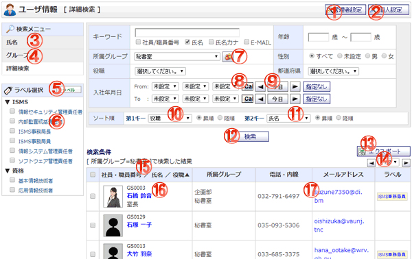

ユーザ情報を一覧表示する画面です。

機能説明
管理者設定ボタン管理者設定画面へ遷移します。 |
個人設定ボタン個人設定画面へ遷移します。 |
|---|---|
氏名検索ユーザ情報を50音の氏名カナから検索するページに遷移します。 |
グループ検索ユーザ情報をグループで検索するページに遷移します。 |
ラベル管理ユーザ情報カテゴリ設定画面へ遷移します。 |
ラベル選択選択されたラベルに該当するユーザーを表示します。 |
グループボタンポップアップでグループ選択画面が開きます。 |
カレンダーボタンポップアップでカレンダー画面が開きます。カレンダー画面で日付をクリックすると、クリックした日付がセットされます。 |
前日・今日・翌日ボタン年・月・日コンボを切り替えます。 |
ソートコンボ（第1キー）ソートの第1キーに指定する項目を選択します。 |
ソートコンボ（第2キー）ソートの第2キーに指定する項目を選択します。 |
検索ボタン入力した条件でユーザの検索を行います。該当結果が一覧へ表示されます。入力内容に不備がある場合エラーメッセージが表示されます。 |
エクスポートボタン検索した表示結果をCSVファイル形式でエクスポートします。 |
ページコンボ・前頁・次頁ページコンボで任意のページへ、前頁アイコンクリックで前のページへ、次頁アイコンクリックで次のページへそれぞれ遷移します。 |
ヘッダタイトルクリックによって一覧のソート条件の切り替えを行います。現在ソート条件になっている項目をもう1度クリックすると「昇順」「降順」が切り替わります。 |
ユーザ情報氏名をクリックするとユーザの詳細な情報がポップアップで表示されます。 |
メールアドレスメールアドレスをクリックするとメールソフトが起動します。 |
表示・入力項目説明
キーワード
選択されたチェックボックスの項目のキーワードを入力します。
所属グループ
所属グループを選択します。
役職
役職を選択します。
年齢
年齢を入力します。
性別
性別を選択します。
都道府県
都道府県を選択します。
入社年月日
入社年月日を選択します。
ユーザ情報検索結果
社員／職員番号、氏名、役職、所属グループ、電話/内線、メールアドレス、ラベルを表示します。